Japan / Hiroshima / Fuchu Town
Fuchu Town, Hiroshima: things to do, food and stays
Fuchu Town · Hiroshima
Fuchu Town
Highlighted on the Hiroshima map.

Stay
ソシオ レジデンシャル ホテル（SOCIO RESIDENTIAL HOTEL）
Soshio Rejidensharu Hotel (SOCIO RESIDENTIAL HOTEL)
Hotel in Osuichi, Fuchu Town; 5-minute walk from Hiroshimaekikarahitoekitenjinkawa Station.
Dining
カルネリア イル マット

Karuneria Iru Matto
うどんの釜くら
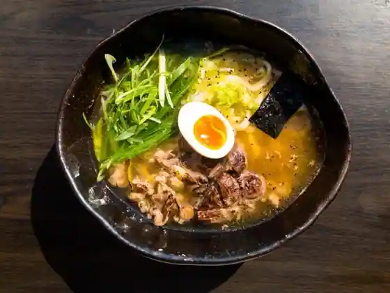
Udonno Kama Kura
麺や 時風
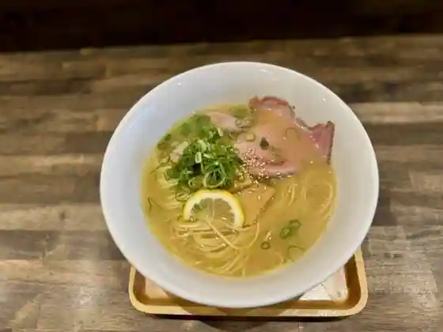
Men Ya Jifu
レンレンコーヒー
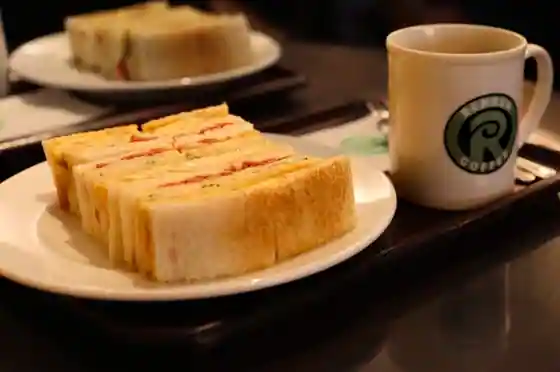
Renren Coffee
インドダイニング ドルガ
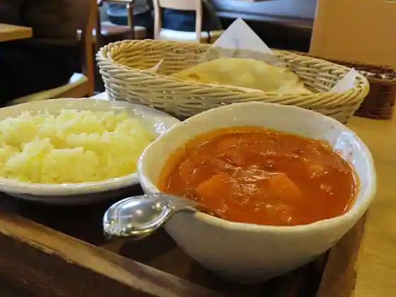
Indo Dining Doruga
こふじもち
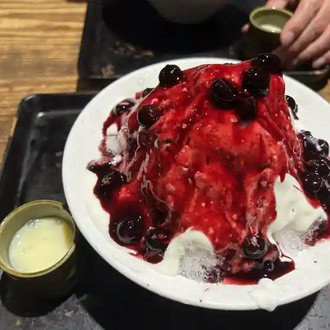
Kofujimochi
魁力屋 イオンモール広島府中店
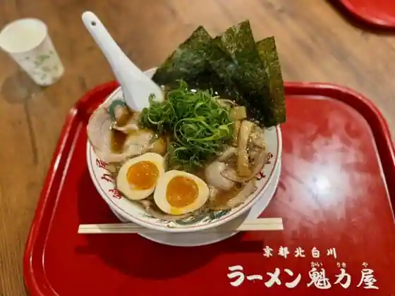
Kai Chikara Ya Ionmoru Hiroshima Fuchu
五エ門 イオンモール広島府中店
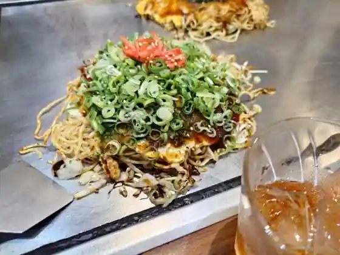
Go E Mon Ionmoru Hiroshima Fuchu
尾道ラーメン中村製麺
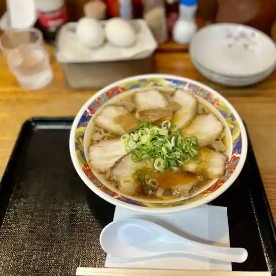
Onomichi Ramen Nakamura Seimen
居酒屋 金太郎
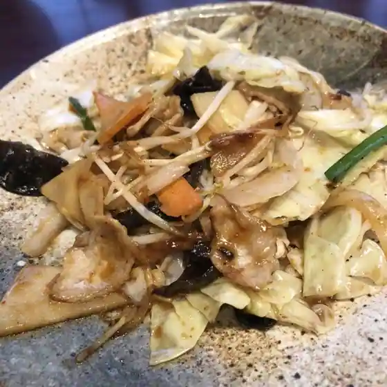
Izakaya Kintaro
キング軒 イオンモール広島府中店
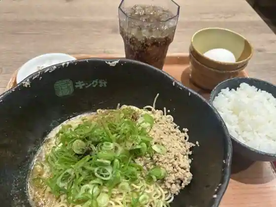
Kingu Ken Ionmoru Hiroshima Fuchu
ジェラート工房 ポーラーベア イオン広島府中店
Jierato Kobo Porabea Ion Hiroshima Fuchu
にんじん
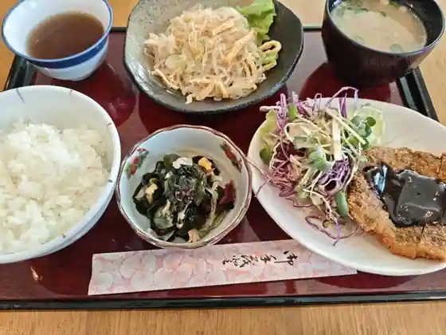
Ninjin
AWkitchen イオンモール広島府中店
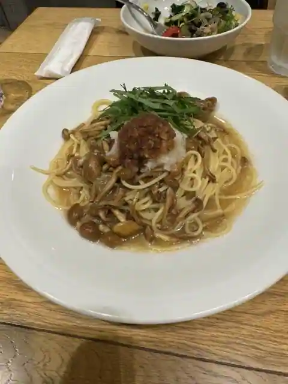
AWkitchen Ionmoru Hiroshima Fuchu
グランマ
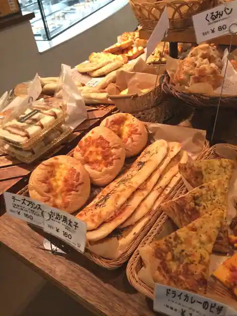
Guranma
明石
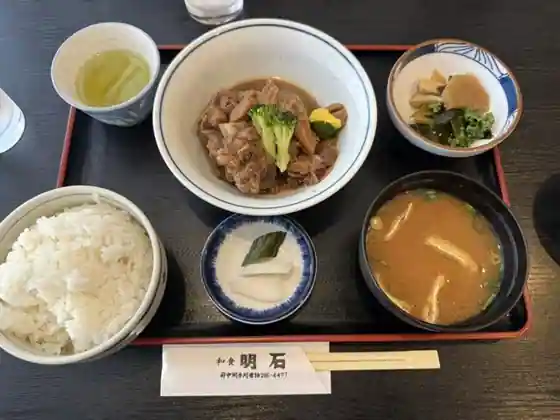
Akashi
まつの屋
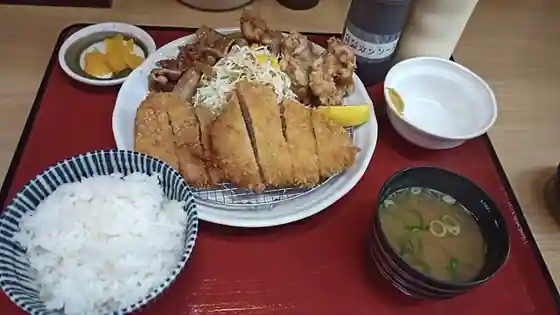
Matsuno Ya
PAN SECT
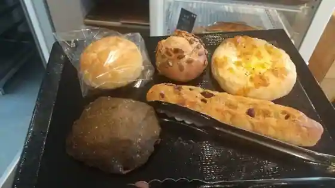
PAN SECT
鶴乃家 イオンモール広島府中店
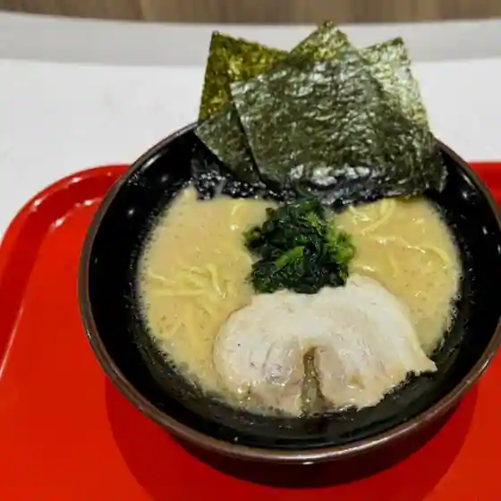
Tsuru No Ie Ionmoru Hiroshima Fuchu
お好み焼き よこちゃん
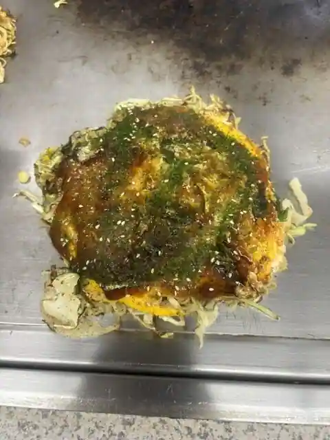
O Konomi Yaki Yokochan
カンテポーレ 広島府中店
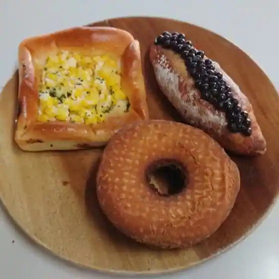
Kantepore Hiroshima Fuchu
はしや イオン広島府中店
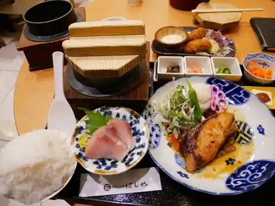
Hashiya Ion Hiroshima Fuchu
モスド イオンモール広島府中ショップ
Mosudo Ionmoru Hiroshima Fuchu Shoppu
水戸家
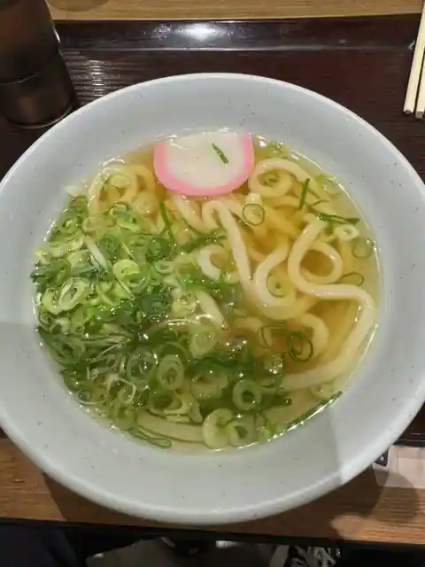
Mitoke
Sights
Suibun Kyo Forest Park

Ta Ie Shrine
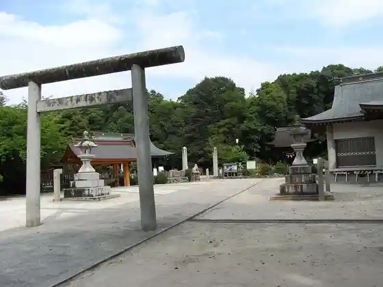
Ionmoru Hiroshima Fuchu Town
Michitaka Tera
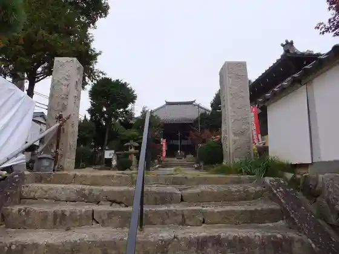
Aki Soja Ato